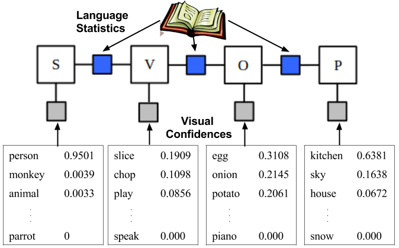

Abstract
This paper integrates techniques in natural language processing and
computer vision to improve recognition and description of entities and
activities in real-world videos. We propose a strategy for generating
textual descriptions of videos by using a factor graph to combine
visual detections with language statistics. We use state-of-the-art
visual recognition systems to obtain confidences on entities,
activities, and scenes present in the video. Our factor graph model
combines these detection confidences with probabilistic knowledge
mined from text corpora to estimate the most likely subject, verb,
object, and place. Results on YouTube videos show that our approach
improves both the joint detection of these latent, diverse sentence
components and the detection of some individual components when
compared to using the vision system alone, as well as over a previous
n-gram language-modeling approach. The joint detection allows us to
automatically generate more accurate, richer sentential descriptions
of videos with a wide array of possible content.
PDF
Slides
Poster
Overview

An overview of our factor graph model that integrates
confidences from visual classifiers with statistics mined from large
text corpora to estimate the most likely Subject-Verb-Object-Place
tuple.
Examples
Sample Youtube clips with outputs from the FGM model.
Reference
If you find this useful in your work please consider citing:
@inproceedings{fgm:coling14,
title={Integrating Language and Vision to Generate Natural Language Descriptions of Videos in the Wild},
author={Jesse Thomason and Subhashini Venugopalan and Sergio Guadarrama and Kate Saenko and Raymond Mooney},
booktitle={Proceedings of the 25th International Conference on Computational Linguistics (COLING)},
year={2015}
}